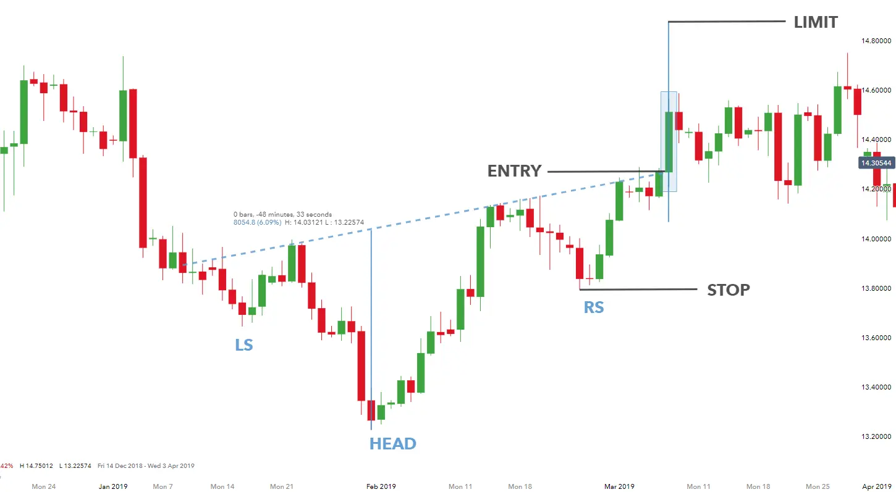

Implication
Un top de cabeza y hombros se considera una señal de oscuridad. Indica una posible reversión de la tendencia ascendente actual a una nueva tendencia descendente.
Descripción
El top de cabeza y hombros es un patrón extremadamente popular entre los inversores porque es uno de los más fiables de todas las formaciones. También parece ser fácil de detectar. Los inversionistas novatos a menudo cometen el error de ver Head and Shoulders en todas partes. Los expertos analistas técnicos le dirán que es difícil detectar las ocurrencias reales.
La clásica cabeza y hombros Top se parece a una cabeza humana con hombros en ambos lados de la cabeza. Un ejemplo perfecto del patrón tiene tres puntos altos agudos, creados por tres rallies consecutivos en el precio del instrumento financiero.
El primer punto -el hombro izquierdo- se produce cuando el precio del instrumento financiero en un mercado en ascenso alcanza un alto y luego cae hacia atrás. El segundo punto -la cabeza- ocurre cuando los precios suben a un máximo aún mayor y luego vuelven a caer. El tercer punto -el hombro derecho- se produce cuando los precios suben de nuevo pero no alcanzan la altura de la cabeza. Entonces los precios vuelven a caer una vez que han alcanzado la altura del hombro derecho. Los hombros son definitivamente más bajos que la cabeza y, en una formación clásica, a menudo son aproximadamente iguales entre sí.
Un elemento clave del patrón es el cuello. El collar se forma dibujando una línea que conecta dos puntos de bajo precio de la formación. El primer punto bajo ocurre al final del hombro izquierdo y el comienzo de la tendencia ascendente a la cabeza. La segunda marca el final de la cabeza y el comienzo de la subida al hombro derecho. El cuello puede ser horizontal o puede inclinarse hacia arriba o hacia abajo. El patrón es completo cuando el soporte proporcionado por el collar está "quebrado". Esto ocurre cuando el precio del instrumento financiero, cayendo desde el punto alto del hombro derecho, se mueve por debajo de la columna. Los analistas técnicos a menudo dirán que el patrón no se confirma hasta que el precio se cierra por debajo del collar - no es suficiente para que el comercio debajo de la collar.
Hay muchas variaciones, algunas de las cuales se describen aquí y pueden ser tan válidas como la formación clásica. Otros factores -incluido el volumen y la calidad de la brecha- deben considerarse en conjunto con el patrón mismo.
Variaciones de una cabeza y hombros de la parte superior
A continuación se presentan algunas variaciones del patrón de cabeza y hombro que pueden ocurrir.
El hombro caído
El hombro descendente, donde el cuello tiene una inclinación hacia abajo, es muy inusual y demuestra una debilidad extrema. La caída ocurre porque el precio en el final de la cabeza y el comienzo del hombro derecho ha caído aún más bajo que el mínimo anterior en el extremo de la hombro izquierdo y el principio del cabeza. La mayoría de los expertos están de acuerdo en que una pendiente descendente tiene consecuencias negativas para la debilidad del mercado. Cuando el hombro derecho está cayendo, el comerciante tendrá que esperar más de lo habitual para una ruptura decisiva del cuello. También hay que señalar que cuando ocurra esa ruptura decisiva, gran parte del movimiento ya habrá ocurrido.
Variación de la anchura de los hombros
El clásico Top de Cabeza y Espalda es simétrico. Sin embargo, si los hombros no coinciden en anchura, no descuente el patrón.
Espaldas planas
Mientras que la cabeza clásica y la parte superior de los hombros se compone de tres puntos agudos hacia arriba, estos no necesitan estar presentes para que el patrón sea válido. A veces, los hombros pueden ser redondos.
Múltiples patrones de cabeza y hombros
Muchos patrones válidos de cabeza y hombros no están tan bien definidos como la cabeza clásica con un hombro en ambos lados. No es raro ver más de dos hombros y más de una cabeza. Una versión común de un patrón de cabezas y hombros múltiples incluye dos hombros izquierdos de más o menos el mismo tamaño, una cabeza, y luego dos hombro derecho que imitan el tamaño y la forma de los hombros de la izquierda.
Volumen
El volumen es extremadamente importante para este patrón.
Para una cabeza y hombros Top el patrón de volumen es la siguiente.
El volumen es más alto cuando se está formando el hombro izquierdo. De hecho, el volumen a menudo se está expandiendo a medida que continúa la tendencia ascendente y cada vez más compradores quieren entrar.
El volumen es más bajo en el hombro derecho, ya que los inversores ven una reversión ocurrir. Los expertos dicen que los bajos niveles de volumen en el hombro derecho son un fuerte signo de una reversión.
En la parte principal del patrón de precios, el volumen cae en algún lugar entre la fuerza del hombro izquierdo y la debilidad del brazo derecho. El volumen a menudo aumenta cuando el collar se rompe ya que la reversión está completa y la presión de la caída comienza en serio. Una de las características clave buscadas en una cabeza y hombros Top por experimentados Analistas Técnicos es el volumen muy alto en la breakout.
A pesar de que el volumen es importante, los expertos nos advierten de no caer atrapados en el número exacto de acciones que se están negociando. Lo que es más importante son los cambios en la tasa de comercio.
Características importantes
Las siguientes son características importantes para este patrón
Simetría
Los hombros derecho y izquierdo alcanzan el pico a aproximadamente el mismo nivel de precio. Además, los hombros suelen estar a la misma distancia de la cabeza. En otras palabras, debería haber aproximadamente la misma cantidad de tiempo entre el desarrollo de la parte superior del hombro izquierdo y la cabeza que entre la cabeza y la parte inferior del hombros derecho. En el mundo real, la formación rara vez será perfectamente simétrica. A veces un hombro será más alto que el otro o tardará más tiempo en desarrollarse.
Volumen
El volumen es más alto en el hombro izquierdo, más bajo en la espalda derecha y en algún lugar entre la cabeza.
Duración del patrón
Algunos expertos dicen que un patrón promedio toma al menos tres meses desde el comienzo hasta el punto de ruptura cuando se rompe el collar. No es raro, sin embargo, que un patrón dure hasta seis meses. La duración del patrón a veces se denomina "ancho" o "longitud" del padrón.
Necesidad de una tendencia ascendente
Este es un patrón de reversión que marca la transición de una tendencia ascendente en los precios a la tendencia descendente. Esto significa que el patrón siempre comienza durante una tendencia ascendente de los precios.
Pista del cuello
El cuello puede inclinarse hacia arriba o hacia abajo. Se considera que una columna de inclinación ascendente es más elevada que una inclinación descendente, lo que indica una situación más débil con bajas de precios más drásticas. Es bastante raro tener un cuello inclinado hacia abajo para este patrón
Consideraciones de negociación
Duración del patrón
Considere la duración del patrón y su relación con sus horizontes de tiempo de negociación. La duración del patrón se considera como un indicador de la duración de la influencia de este patrón. Cuanto más tiempo dure el patrón, más tiempo tardará en que el precio se mueva al precio objetivo. Cuanto más corto sea el patrón, más rápido será el movimiento del precio. Si está considerando una oportunidad de comercio a corto plazo, busque un patrón con una duración corta. Si está considerando una oportunidad de comercio a largo plazo, busque un patrón con una duración más larga.
Precio objetivo
El precio objetivo proporciona una importante indicación sobre el movimiento potencial de los precios que este patrón indica. Considere si el precio objetivo para este patrón es suficiente para proporcionar rendimientos adecuados después de que sus costos (como comisiones) se hayan tenido en cuenta. Una buena regla es que el precio objetivo debe indicar un retorno potencial de más del 5% antes de que un patrón se considere útil. Sin embargo, debe tener en cuenta el precio actual y el volumen de acciones que tiene la intención de negociar. También, compruebe que el precio objetivo ya no se ha alcanzado.
Tendencia de entrada
La tendencia de entrada es una característica importante del patrón. Una tendencia de entrada superficial puede indicar un período de consolidación antes de que comience el movimiento de los precios indicado por el patrón. Busque una tendencia de entrada que sea más larga que la duración del patrón. Una buena regla es que la tendencia de entrada debe ser al menos dos veces la duración del patrón.
Criterios que respaldan
Apoyo y resistencia
Busque una región de apoyo o resistencia alrededor del precio objetivo. Una región de consolidación de precios o una fuerte línea de apoyo y resistencia en o alrededor del precio objetivo es un indicador fuerte de que el precio se moverá a ese punto.
Ubicación de la media móvil
La cabeza y la parte superior de los hombros deben estar por encima de la media móvil. Compara la ubicación del patrón con una media móvil de longitud adecuada. Para patrones de corta duración, utilice una media móvil de 50 días, para patrones más largos utilice un promedio móvil de 200 días.
Tendencia de media móvil
La media móvil debe cambiar de dirección dentro de la duración del patrón y debe dirigirse en la dirección indicada por el patrón. Mira la dirección de la tendencia de la media móvil. Para patrones de corta duración, utilice una media móvil de 50 días, para patrones más largos utilice un promedio móvil de 200 días.
Volumen
El volumen es más alto cuando se está formando el hombro izquierdo.
El volumen es más bajo en el hombro derecho.
En la parte principal del patrón de precios, el volumen cae en algún lugar entre la fuerza del hombro izquierdo y la debilidad del brazo derecho.
Un fuerte pico de volumen el día de la confirmación del patrón es un indicador fuerte en apoyo del potencial para este patrón. El pico de volumen debe estar significativamente por encima de la media del volumen durante la duración del patrón.
Otros patrones
Otros patrones de reversión (como las líneas de engulfamiento de Bullish y Bearish y las islas) que ocurren en las cumbres y los valles indican una fuerte resistencia en esos puntos. La presencia de estos patrones dentro de una cabeza y hombros es una fuerte indicación en apoyo de este patrón.
Criterios que refuten
Sin aumento de volumen en la confirmación
La falta de un pico de volumen el día de la confirmación del patrón es una indicación de que este patrón puede no ser fiable. Además, si el volumen ha permanecido constante, o estaba aumentando, durante la duración del patrón, entonces este patrón debe considerarse menos fiable.
Ubicación de la media móvil
Si la cabeza y la parte superior de los hombros está por debajo de la media móvil, entonces este patrón debe considerarse menos fiable. Compara la ubicación del patrón con una media móvil de longitud adecuada. Para patrones de corta duración, utilice una media móvil de 50 días, para patrones más largos utilice un promedio móvil de 200 días.
Tendencia de media móvil
Una media móvil que está en tendencia en la dirección opuesta a la indicada por el patrón es una indicación de que este patrón no es fiable. Mira la dirección de la tendencia de la media móvil. Para patrones de corta duración, utilice una media móvil de 50 días, para patrones más largos utilice un promedio móvil de 200 días.
Tendencia de entrada
Una tendencia de entrada que es significativamente más corta que la duración del patrón es una indicación de que este patrón debe considerarse menos confiable.
